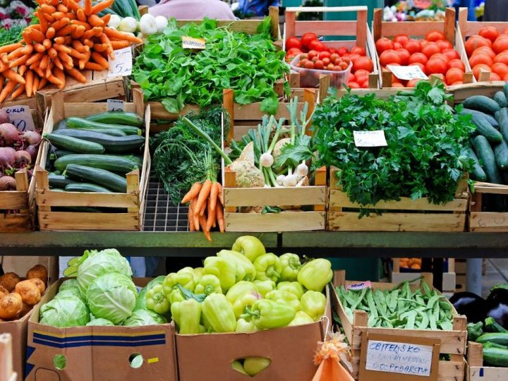
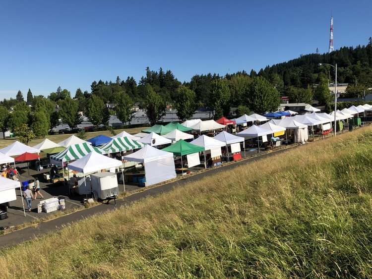
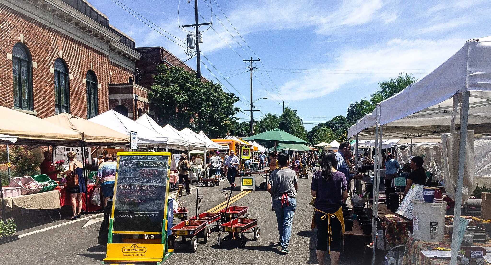

Portland Farmers Market
Image from patch.com
Geovisual of farmers market in Porland Oregon
Hillsdale Farmers Market
Image from Hillsdale farmers market website
HOURS & OPENINGSMarch 3, 17, 31 & April 14, Sundays, 9am – 1pm
Then weekly from April 28 through November 28
Winter, December 8 2019 to April 5 2020, 9am – 1pm
PAYMENTS ACCEPTED
EBT, credit & debit cards, cash & up to $10 with SNAP
CONTACT & INFO
Number (503) 475-6555
Website www.hillsdalefarmersmarket.com
Hollywood Farmers Market
Image from hollywoodpdx.com
HOURS & OPENINGSApril to September, Saturdays, 8am – 1pm
October to November, Saturdays, 9am – 1pm
December to March, 1st and 3rd Saturdays, 9am – 1pm
PAYMENTS ACCEPTED
Credit & debit cards, cash & up to $10 with SNAP & FDNP
CONTACT & INFO
Number (503) 709-7403
Website www.hollywoodfarmersmarket.org
Montavilla Farmers Market
Moreland Farmers Market
People's Farmers Market
put text here
Portland Farmers Market at Portland State University
Lents International Farmers Market
Lloyd Farmers Market
OHSU Farmers Market
King Portland Farmers Market
St Johns Farmers Market
Portland Farmers Market at Pioneer Courthouse Square
Cully Farmers Market
Woodstock Farmers Market
South Waterfront Farmers Market
Kenton Portland Farmers Market
Portland Farmers Market at Shemanski Park
Woodlawn Neighborhood Farmers Market

Image from website
HOURS & OPENINGSPAYMENTS ACCEPTED
CONTACT & INFO
Number
Website